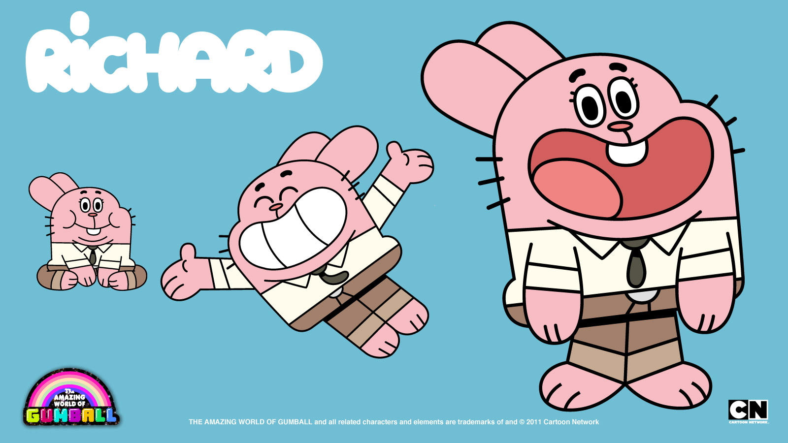

<!DOCTYPE html>
<html lang="en">
<head>
    <meta charset="UTF-8">
    <meta name="viewport" content="width=device-width, initial-scale=1.0">
    <link rel="stylesheet" href="./styles.css">
    <title>Practicando con grid</title>
</head>
<body>
    
</body>
</html>


<div class="container">
   <div class="header">HEADER</div>
    <div class="nav">
        <div class="nav-izq">
            <ul>
                <li><a href="#">Inicio</a></li>
                <li><a href="contacto">Contacto</a></li>
            </ul>
        </div>
        <!-- <div class="nav-der">
            <ul>
            <li><a href="carrito"></a></li>
            </ul>
        </div> -->
    </div>
    <div class="main">
           <div class="main-1">
               <h3><span class="rosa">Richard Watterson</span> es uno de los protagonistas de The Amazing World of Gumball.</h3>
                <div class="richard-img">
                    
                </div>
      </div>

    <div class="main-2">
       <h3>Algunas características del personaje:</h3>
       <ul>
        <li>Es el padre de la familia Watterson.</li>
        <li>Tiene forma de conejo rosado gigante.</li>
        <li>Está casado con Nicole Watterson.</li>
        <li>Sus hijos son Gumball Watterson, Darwin Watterson y Anais Watterson.</li>
        <li>Es extremadamente vago, infantil y glotón.</li>
        <li>Muchas veces causa problemas por su falta de responsabilidad.</li>
        <li>A pesar de eso, suele ser muy cariñoso con su familia.</li>
       </ul>  
    </div>
    <div class="main-3">
         <h3>Datos curiosos:</h3>
       <ul>
        <li>Su voz original en inglés fue hecha por varios actores durante la serie.</li>
        <li>Es uno de los personajes más usados para humor absurdo en la serie.</li>
        <li>Tiene episodios centrados completamente en sus ideas ridículas o su pereza.</li>
       </ul>  
    </div>
    <div class="main-4">
         <h3>La serie mezcla:</h3>
       <ul>
        <li>Comedia absurda.</li>
        <li>Referencias a internet.</li>
        <li>Distintos estilos de animación.</li>
        <li>Y humor tanto para chicos como adultos.</li>
       </ul>   
    </div>

   
    </div>
    <div class="aside">
        
        
        
        
        
    </div>

    <div class="footer">Derechos reservados @florencia merzario 2026-2027-2028</div>
</div>